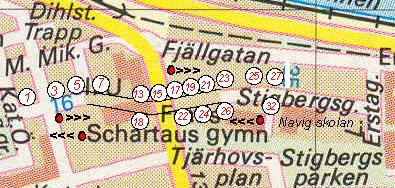
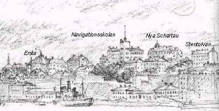
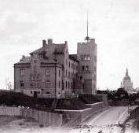
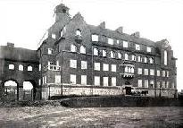

|
Stigbergsgatan Väster om Renstjernas gata. Bilder från väster. Väster om Renstjernas gata. Bilder från öster. Öster om Renstjernas gata. Bilder från väster. Öster om Renstjernas gata. Bilder från öster. Ur Kulturhus på Söder.., Arne Eriksson, 1999 Gatans äldre namn är Katarina östra qvarngränd. Namnet är belagt sedan 1674. Troligen är det »Swart Hindricks gvam«, som låg på nuvarande Hantverksinstitutets plats, som givit upphov till namnet. Det nuvarande namnet, Stigbergsgatan, fastställdes 1885. När Renstiernas gata sprängdes fram delades Stigbergsgatan i två delar. Den västra delen fick 1939 heta Sandbacksgatan. Fogelström berättar att Stigbergsgatan länge var Fjällgatans skuggiga och fattiga släkting, mer en stenig bystig än en ordnad gata. »Kloaker och rännstenar äro där mångenstädes okända och man slår spillvattnet på gammaldags vis ut på gatan, och dricksvattnet får också hämtas långväga ifrån från brunnar och vattenposter.« Så låter det i tidningsreferat från 1908. (Svenska Dagbladet 1908.11.15.)
Erik Asklund har (i "Ensamma lyktor") talat om Brännkyrkagatan som Hornsgatans skugga, en smal led som på litet respektfullt avstånd följer den bredare gatan "som den fattige sin rike släkting". Stigbergsgatan var länge Fjällgatans skugga och fattiga släkting, mer en stenig bergsstig än en ordnad gata. Det var en väl gömd, nästan oupptäckt liten gränd som i början av det här seklet plötsligt hamnade i rampljuset i samband med att Navigationsskolan byggdes och Renstiernasgatan drogs fram. Några tidningscitat från åren 1907-1908: "Denna (gata) som för de flesta är alldeles okänd. . ." "Man kan knappast tro att man befinner sig på en huvudstadsgata, utan snarare i ett litet fiskläge på västkusten." "Kloaker och rännstenar äro där mångenstädes okända och man slår spillvattnet på gammaldags vis ut på gatan, och dricksvattnet får också hämtas långväga ifrån från brunnar och vattenposter." Även senare kunde Stigbergsgatan uppväcka liknande uttryck av upptäckarglädje, som 1915 då nya Schartau stod klart och Dagens Nyheters reporter berättar: "Vid den avlägsna Stigbergsgatan uppe på Söder var fredagen en festdag. Svårt var det att komma dit, och sällan är det några andra än gatans egna bebyggare som ta sig uppför de branta trätrappor som leda dit. Men nu trasslade sig till och med automobiler dit upp till urinvånarnas ogemena nöje, och den knaggliga bergsstigen trampades av både kungliga och ministeriella fötter." En sådan gata blev naturligtvis populär bland de konstnärer som sökte pittoreska motiv. Kanske man kan utnämna Victor Forssell till Stigbergsgatans specielle målare. Viggo Loos säger att Forssell alltid "känt sig dragen till - - övergivna kåkkvarter. Mer än någon annan i vårt senare 1800-talsmåleri blev han deras skildrare", däremot saknade han sinne för "det pompösa i den framväxande storstaden". Forssells första kända Stigbergs-bild är från 1883, "Gata på Söder". "Det är ett typiskt motiv från utkanterna. Vad som skildras är ödsligheten och stillheten med en tillsats av något proletärt i stämningen. Här framträda de element färdigbildade, som skulle bli bestämmande för Forssells gatuskildringar, hans kärlek till den bebyggelse, som kämpade med förfallet, de låga husen, som tyckas omgivna av en frusen ensamhet, de lutande planken och någon enstaka gatlykta, som sticker ut från fasaderna. Man möter atmosfären av grå och fattig vardag och något av det morbida hos utkanterna i hans många bilder av ödsliga gatustråk, av kåkar och ruckel. Men fattigkvarterens tristess är trots allt bara utanverken. Han ser på sina motiv med målarens öga. I 'Gata på Söder' blir en murs yta levande av fläckar i grått, grågult och rött; i det gula planket har han upptäckt en portal i grönt. - - Ur de exakt observerade detaljerna stiger till slut en bild, där det fattiga och torftiga kringsvävas av ett slags skygg poesi." (Loos) Bilden visar Stigbergsgatan österut från Renstiernasgatan, i fonden sticker det lilla lusthuset i Anna Lindhagens täppa upp sitt torn. Det höga huset intill är numer rivna Stigbergsgatan 31, bakom det huset går trappgränden ner mot Fjällgatan. Ett annat motiv från Stigbergsgatan återkom Forssell till gång på gång, det är gatan sedd västerut mot Katarina kyrka. "Närbilden av de låga husen med röda tak och blå vindskupor, av planket och gatulyktan är påtagligt realistisk medan bakgrundens husklunga och Katarina kyrkas blå torn bada i ljus." Denna målning finns i många versioner, den första från 1890, den sista från 1920. Husen och utsikten är desamma men staffagefigurerna ändras för varje ny bild.
 De röda punkterna visar Stigbergsgatan, sedd från olika håll. (Klicka!)Husen vid Stigbergsgatan var så gott som alla trähus, ett undantag var den nämnda 31-an. Ägare och invånare var oftast mera enkla människor, från 1880-talet kan bland ägarna nämnas en mångleriidkerska Hultstrand (19), gesällen Andersson (21 ), tunnbindaränkan Nordgren (23), kontrollören Lundvall (27), målargesällen Björkman (29) och sjökaptensänkan Bolin (31) . Och på gatans södersida lantbrukaren Wahlberg (22) och änkan Lindström (24) . I Stigbergsgatan 17, som fortfarande står kvar närmast stupet mot Renstiernasgatan, inflyttade kryddkramhandlaren G. A. Bastman på 1870-talet och ägde huset tills staden köpte det omkring 1910. Bastmans rörelse utvecklades från kryddkramhandel till sportmagasin och kruthandel. På 1880-talet hade Bastman sin affär vid Riddarhustorget. En artikel i "Svenska firmor och män inom handel, industri och konst" (1886) berättar: "Under den även i vårt land ständigt tilltagande hågen för idrott och kroppsövningar - omfattande såväl gymnastikföreningar som kapplöpnings- och segelsällskap, rodd-, boll-, skid- och skridskoklubbar - är det naturligtvis av synnerlig vikt att vederbörande kunna här hemma bli |
 De röda punkterna visar Stigbergsgatan, sedd från olika håll. (Klicka!) Den stora förändringen av Stigbergsgatan inleddes med byggandet av Navigationsskolan, som invigdes 1907. Huset är numera Erstas vårdhögskola. Därefter kom Schartaus handelsinstitut som invigdes den 29 oktober 1915. Den Norske Kirke i Stockholm, Kronprinsesse Märthas kirke, var klar 1976. Under 1920- och 1930-talet uppfördes de flesta av de stora, moderna bostadshusen vid Stigbergsgatans östra del fram mot Lilla Erstagatan.
Bastmans hade senare sin affär vid Kungsträdgårdsgatan och företaget existerar fortfarande, nu vid Nybrogatan intill Nybroplan. Den stora omvälvningen inleddes alltså när Navigationsskolan stod klar 1907. Arbetet påbörjades 1905 och man uppmärksammade särskilt att huset försågs med en sådan modernitet som värmeledning, den tillverkades av Ludvigsbergs verkstad. Arkitekt var Georg Ringström och byggnadsentreprenör Carl Ljungqvist.
 "Högt uppe på Stadsgårdsbergets krön reser sig en byggnad av mindre vanligt utseende. Den har tinnar och krenelerade utsprång, alldeles som en medeltidsborg och den rödlätta färgen gör sig utmärkt mot blå himmel", heter det i ett tidningsreferat från september 1907. Söderborna såg gärna upp mot tornet som reste sig mot himlen, särskilt när det var dags för tidkulan däruppe att höjas och falla. Kulan föll för sista gången i juni 1936. Undervisningen vid skolan påbörjades den första november 1907. Två dagar senare stod Erstas nya sjukhus kort stycke därifrån invigningsklart. Nästa stora bygge vid gatan var det nya Schartau. Denna skola invigdes den 29 oktober 1915 samtidigt som man firade femtioårsminnet av institutets tillkomst. Arkitekt var här Knut Nordenskjöld, arbetet hade påbörjats hösten 1913.
  Tillkomsten av de nya skolorna och det fria läget högst uppe på berget medförde snart att flera intresserade byggherrar hörde av sig. Eftersom stadsplanen inte tillät byggandet av några högre och större hus i kvarteret Stammen (Stigbergsgatans nordsida) blev de hus som uppfördes där något exklusiva, litet av privatpalats. Det som först byggdes var huset Stigbergsgatan 35 Försynt, försiktigt, med en viss bävan hälsas nykomlingen i "Stockholms stads byggnadsnämnds verksamhet under år 1920": "Kvarteret hör till det mest pittoreska som staden ännu äger kvar från en tid, då livet i dessa trakter förlöpte i avskild ro, och av storstadens buller dit upp endast trängde det avlägsna ljudet av klockorna från stadens kyrktorn och intet annat förnams av det rörliga livet där nere än skeppen, som drogo ut och in genom det breda inloppet vid foten av den otillgängliga klippväggen. En utsikt över land och vatten, som söker sin like, har städse från denna vitt synliga och ändock avskilda plats övat sin dragningskraft på dem, som älskat att i en stämningsfull omgivning se staden växa fram ur fjärdar och vikar, där den splittrade skärgården förtonar i fastlandets mjuka, rogivande konturer. Ännu ligga de små röda stugorna med sina tegeltak inbäddade som i en liten bortglömd småstad i grönskan bland syrener och fruktträd, men storstaden har trängt dem in på livet, och deras tillvaro är inte längre fredad som förr. En främling har redan slagit sig ned mitt ibland dem och andra skola snart följa, om inte stadens väktare skänka dem sitt skydd och sätta ett lås för porten mot objudna gäster. Den främling, som nu berett sig plats däruppe, hör dock icke till de mest ovälkomna, ty den hänsyn har man visat det gamla, eller snarare, den omtanke har ägnats åt anblicken från staden, att inga fem- eller sexvåningshus inbjudits att taga kvarteret i arv efter de röda stugorna. Endast två våningar inrymmas under en låg takresning, och med grönskans hjälp har man sökt vinna anslutning till omgivningen. Huset inrymmer två större bostadslägenheter, jämte ett antal kontorsrum i bottenvåningen, och uppfördes för fastighetsaktiebolaget Stammen av byggmästaren N. J. Nilsson efter ritningar av arkitekterna Östlihn och Stark." I detta hus inflyttade nu grosshandlaren J. P. Åhlen vars företag Åhlen & Holm några år tidigare flyttats från Insjön till Stockholms Söder (vid Ringvägen-Götgatan), Åhlen bodde där till sin död 1939, senare har hans son och efterträdare i företaget, direktör Gösta Åhlen, övertagit huset. Nästa "främling" blev Stigbergsgatan 27 där "A.B. Söderkåken" med byggmästaren Olle Engkvist i ledningen byggde ett ståtligt hem åt byggmästaren 1927. Arkitekt var Stadshusets skapare, Ragnar Östberg. Huset har uppförts av putsat tegel, fönster- och portomfattningar, socklar och trappor är av vätternsandsten, taket klätt med koppar. Till huset hör en "klosterträdgård" med tittgluggar ut mot Saltsjön. (Engkvist lät senare renovera Charlottendal i Gröndal där han bodde sina sista år.) Stigbergsgatan 37, hörnet Lilla Erstagatan, f.d. Klippgatan, är också ett mera lågt och påkostat hus. Det ägdes av skådespelerskan och chefen för Dramatiska teatern, Pauline Brunius, som bodde där från 1933 och till sin död, huset har senare köpts av diakonissanstalten. På Stigbergsgatans sydsida gick man hårdare fram och byggde 1929 ett väldigt bostadskomplex (Stigbergsgatan 32 - Lilla Erstagatan 6-8). Arkitekt var Rolf Bolin. Byggnadsnämndens arsberättelse uttrycker denna gång inga funderingar om vikten av att ta hänsyn till äldre bebyggelse etc. utan noterar bara att "ett större byggnadsföretag fullbordats". Det heter vidare: "Huset omsluter på tre sidor en gård, som på den fjärde öppnar sig mot Navigationsskolan. Läget är synnerligen fördelaktigt, soligt och med vid utsikt åt flera håll." |